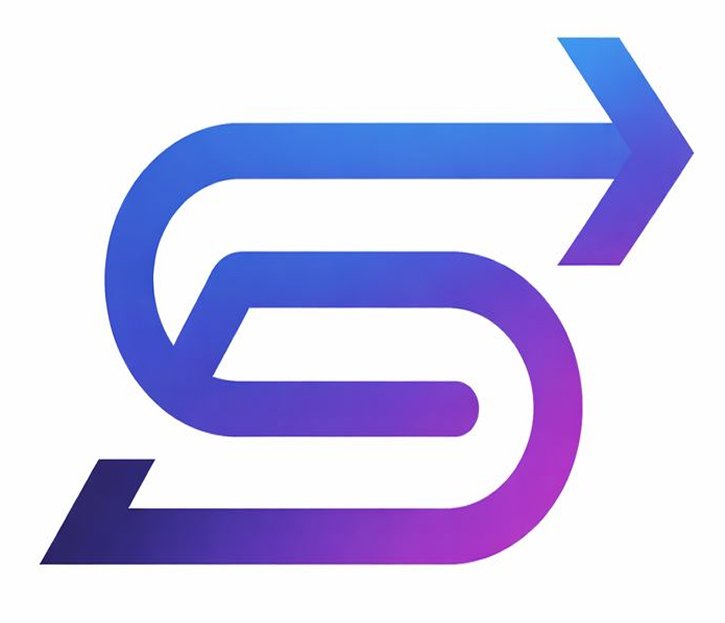

Your Claude Code hours logged automatically to the right SirahOS project — one tile, one sign-in, one install.
Thirty seconds, then the detail.
Every time you work in a project folder with Claude Code, the tile is quietly recording — which project, how long, what you asked, and what the agent did. Memory Analyzer rolls those up into one SirahOS WorkLog per day per project, logged as you, with the hours and a summary. The SirahOS WorkLogs page stays the way you already use it; nothing in your existing timesheets changes.
One WorkLog per calendar day per project, pushed every 15 minutes. No typing.
Every turn's files touched, commands run and decisions made, searchable across every project.
Always-on-top widget shows tokens used, hours worked, and when an agent is blocked on you.
A tray toast or phone push when Claude is waiting on an answer, so you don't miss it.
Managers see hours by member and by project — same data as the SirahOS Team tab.
Memory and events live on your laptop. Only daily WorkLogs leave, under your own account.
A short checklist so Step 1 lands clean.
ACTIVE — ask an admin if unsure.Double-click the installer. Dismiss SmartScreen. Pick two options. Done.
\\sirahdigital-nas\installers\MemoryAnalyzerSetup.exe).%LOCALAPPDATA%\MemoryAnalyzer) and click
Next.A small floating tile appears. Open the dashboard from its menu.
When the installer finishes, a small violet floating widget appears in the top-right of your screen. That's the tile.
http://127.0.0.1:8765/.One password, one time. The tile keeps a token, not your password.
After a second or two the form disappears and the mapping panel shows up with every project you can log work against on SirahOS.
Tell the bridge: when I work in this folder on disk, log the hours against this SirahOS project.
The dashboard shows one row per folder it has seen you work in. On the
left is the folder name on disk (voicetranscriber). On the
right is a dropdown of every SirahOS project you can log work against.
voicetranscriber → AuraTel · Client X,
WealthOS-Mobile → WealthOS Mobile · Client Y.
voicetranscriber is a different mapping
from VoiceTranscriber. If you renamed a repo, map the
new name — your old history stays on SirahOS unchanged.
Open SirahOS and watch a WorkLog appear.
One installer, every teammate. The exe becomes "yours" through three small per-user pieces of state.
| Piece of state | Where it lives | How it is set |
|---|---|---|
| Windows user | %USERNAME% | Set by Windows at login. Decides which %LOCALAPPDATA%
tree the tile reads and writes. |
| Device id | %LOCALAPPDATA%\SystemMonitorWidget\device.json | Minted on first launch, random, never changes. Keys the team dashboard rows so renaming yourself does not fork your history. |
| Member name | %LOCALAPPDATA%\SystemMonitorWidget\team.json | Falls back to %USERNAME%. Admins may pre-fill it
via install.ps1 -Member "Jane Smith". |
| SirahOS identity | %LOCALAPPDATA%\SystemMonitorWidget\sirahos.jwt.json | Decided by your sign-in (Step 3). WorkLogs are created on SirahOS as this user. |
| Folder → project map | %LOCALAPPDATA%\MemoryAnalyzer\config.json | Edited from the SirahOS tab (Step 4). |
Because every piece of state is scoped to your Windows user, two teammates sharing a laptop (e.g. a conference room PC) each get their own tile, their own SirahOS session, and their own WorkLogs — no cross-contamination.
install\install.ps1 on the
shared drive and run:
powershell -ExecutionPolicy Bypass -File .\install.ps1 ` -Mode full -Member "Jane Smith" -SyncSeconds 60Everything the installer prompts for can be supplied as a flag.
Six tabs. One hero at the top of each so you know which page you are on.
| Tab | What it shows |
|---|---|
| Overview | Finished turns, tokens, cost, median task time, reply time, tool-calls per task — summed over the selected period. A trend chart, token-by-model donut, token-by-project bars, and a hour-of-day heat row. |
| Tasks | Every finished Claude Code turn as a sortable table — filter by project, member, model, or any word in the prompt. |
| Memory | Search what past turns did: files touched, commands run, decisions made, test results. Not clamped to the selected period — memory is "whenever". |
| Team | Devices on your team, their live sessions, machine health (CPU/RAM/GPU), and token/project breakdown by member. |
| SirahOS | Sign in, map folders, see which WorkLogs the bridge has pushed and whether any failed. |
| Tile | Appearance (opacity, scale), behaviour (click-through, hide from capture), and push notifications for blocked-agent alerts. |
Your SirahOS session has expired, or an admin revoked it. Sign in again — your folder → project mapping is kept.
Delete the WorkLog on SirahOS as usual. On the tile, open SirahOS → Recent pushes, find the day, and click Don't push this day. The bridge will leave that day alone.
Yes — just edit the WorkLog on SirahOS directly. The bridge only touches WorkLogs it created and never overwrites one you have edited.
No. Hooks only write a short line to a local log and exit; the push runs on a separate schedule. On a benchmark the per-hook overhead is a few milliseconds.
Prompt text is stored locally. It is sent to SirahOS only as part of the WorkLog's notes field (truncated to 120 characters per line). To turn that off, open SirahOS → Settings on the dashboard and switch off Share prompt text — your WorkLog will say "(prompt hidden)" instead.
Yes — it is plain outbound HTTPS to sirahos.sirahdigital.in,
the same thing your browser uses. No tunnel, no inbound ports.
No. The bridge looks back 14 days on every tick, so the first time it reaches SirahOS after an offline stretch it posts everything that is missing.
Not from the same Windows user account. Each teammate signs in to Windows as themselves and installs under that account — their SirahOS session, mapping and local store are all per-user.
All traces removed in two clicks.
The uninstaller removes the install directory, the SirahOSBridge
scheduled task, and the per-user state under
%LOCALAPPDATA%\SystemMonitorWidget
(local events log, memory store, DPAPI-protected SirahOS token).
WorkLogs already posted to SirahOS are not deleted —
they are your work history on the server.